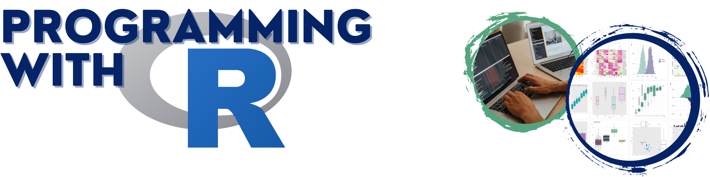

Interested in getting started with R
programming, but don’t know anything about programming or data analysis
… then come join us for our two-day bootcamp.
This training will be focused around hands-on learning activities and you are welcome to submit your own data prior to the workshop - if you are lucky it will be chosen as an example data set.
You will be introduced to the R programming language and to a popular editor Posit, formerly known as RStudio while learning a little about Data Science. Example data sets will be used to practice data manipulation, organization, and graphical exploration. You are also encouraged to bring your own data and data challenges. In addition, major concepts of scientific research such as reproducibility will be addressed. Participants will gain the skills necessary to manage and organize data, run basic analyses, and generate beautiful, high-quality figures in R.
Here is
the flyer, feel free to post it at your bulletin boards.
Bootcamp Overview
R is a complete, flexible, and open source system for statistical analysis and graphics, and has become a tool of choice for many life scientists.
Day 1: R Crash Course with Introduction to Data Analytics
 Day
1 will be an introduction to programming with R and teach you how to use
Rstudio. R basics will be covered, such as using the command line as a
calculator, storing values in a variable, basic data structures
(vector, matrix, list, data frame, etc.), and data types. We
will show how to read-in basic data sets and access
rows/columns, and summarize data with statistics and plots. Then we will
move on to scripting in R, including control flow (choices and
loops), writing functions, and installing/loading libraries
(and the differences between CRAN, GitHub, and Bioconductor
packages).
Day
1 will be an introduction to programming with R and teach you how to use
Rstudio. R basics will be covered, such as using the command line as a
calculator, storing values in a variable, basic data structures
(vector, matrix, list, data frame, etc.), and data types. We
will show how to read-in basic data sets and access
rows/columns, and summarize data with statistics and plots. Then we will
move on to scripting in R, including control flow (choices and
loops), writing functions, and installing/loading libraries
(and the differences between CRAN, GitHub, and Bioconductor
packages).
Day 2: Tidy R, Figures, and Reproducibility
We will discuss commonly seen coding problems and introduce what it
means to conduct reproducible data science. During the
second day, we will go through an example of setting up a new
project folder, loading “messy” data, organizing scripts, creating high
quality plots, and creating output files. In reference to the
messy data, we will go over what “tidy” data is, and how to use
tidyverse libraries. Then will go over some
principles of the visual display of quantitative data,
and go more into plotting in R with base and
ggplot2.
Schedule
| Outline | Date and Time |
|---|---|
| R Crash Course with Introduction to Data Analytics | March 20, 2023, 9 - 4pm |
| Tidy R, Figures, and Reproducibility | March 21, 2023, 9 - 4pm |
noon - 1pm: lunch on your
own
Things to Know
Audience and Prerequisites
No prior knowledge about data analytics or coding experience are necessary!
This bootcamp is intended to beginners wanting to become familiar with the R syntax, environment, and the most common commands to start using R to explore, interpret, and present their data.
This is NOT a training on statistics but rather a training on how to use R to perform different tasks.
You will need your own laptop and must install R language and Posit (aka RStudio) prior to the training; follow the instructions on their websites. We recommend to first download R and then Posit. If you don’t have a laptop, please let us know and we will provide a loaner laptop.
You are encouraged to go through some of the R documentation: https://www.r-project.org/.
Application and Registration Fee
We have a limited number of registration fee waivers available, but we also encourage your professors to support your participation. Application is open until March 13th, 2023 , but will close as soon as spots are filled with confirmed participants.
Application is required to be considered to participate. Students and faculty from TMCC, WNC, SNU, and UNR interested in R are encouraged to apply. This is a two day workshop and participants must attend both days to be considered for a registration waiver.
For Students and Postdocs, application requires:
- Complete online application form
- Indicate 1 academic reference, and provide their contact information in the application form. The application will automatically send them a link to the brief reference form to fill out. All references need to be submitted directly by the author. Your references will not receive the link to the reference form until your application is fully submitted.
If you are interested in applying for a Registration Waiver addition materials are required:
- Copy of unofficial transcript (not for postdocs)
- Academic references (need to provide an account number/worktag)
- Personal statements not to exceed one page addressing the following
- Academic background and research interests
- Why you are interested in this bootcamp and what you hope to gained from this training
- How will this training affect your academic/research/professional career
- Anything else you want to share
You will receive an email to confirm participation, upon reception of the confirmation email, participants will be asked to confirm their attendance within 2 days.
For Faculty and Staff, application requires:
- Complete online application form
- Limited Registration Waivers are available, must indicate why one cannot self-support their attendance
Additional Information
- Applications from TMCC, WNC, and SNU will receive priority
- No-show policy: the associated lab/PI will be charged the registration fee even when a waiver was granted. In other words, if you don’t intend to actually be there, don’t register and take a seat from another student
- Attendance is required in-person
- Participants attending the entire bootcamp may request a certificate of completion.
Coordinator: Juli Petereit
Instructors: Nicole Schrad and Juli Petereit
Acknowledgements
We thank Nevada INBRE (GM103440), UNR’s Graduate Student Association, and UNR’s Graduate School for offering limited number of registration waivers to students and postdoctoral fellows.
This bootcamp was also partially supported by grants from the National Science Foundation (2203236 and 2141660).
Comics thanks to https://xkcd.com/.